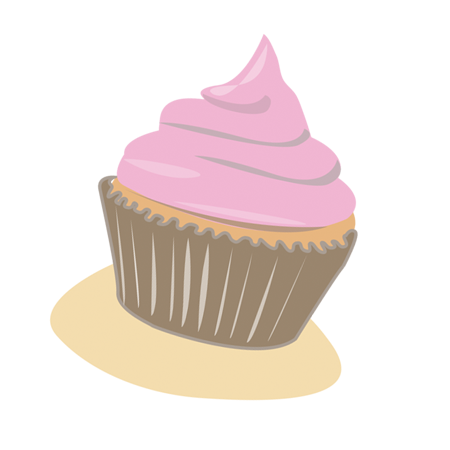

The Code
Computer programming may not be a common parent-daughter activity, but we're determine to change that.

In the summer of 2014, we launched a pilot session specifically for mothers and daughters to learn to code, and it was a huge success! In 2015, the program ran every other month and in 2016, we began providing a session every 2nd Saturday of the month. We also expanded the sessions to father-daughter combos! In 2018, we added a workshop focused on hardware -- Jewelbots!
During the Web Development workshop, coding duos will envision themselves as cupcake shop owners in need of creating a website to show off their baked goods. They'll learn website building from start to finish, doing everything from displaying their own copy to adding a color theme to suit their tastes, to hosting their site on Github Pages.
Jewelbots are friendship bracelets for the iPhone era. Technology-enabled jewelry for tween and teen girls, they're a means of communicating with fiends by lighting up when a BFF is near or buzzing to send messages to a pal across the school.